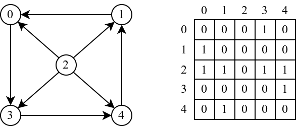
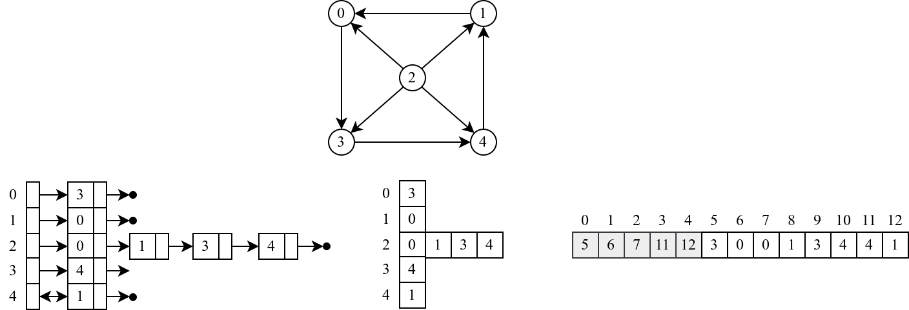

Grafovi
-
Uvod u grafove
Grafovi su jedna od najkorisnijih struktura podataka. Još u davna vremena su korišćeni za predstavljanje mreža puteva između gradova i odgovarajućih mapa, koje su putnici nosili sa sobom tokom putovanja. Poznat je slučaj kopije mape iz petog veka koja je sadržala mrežu puteva Rimskog carstva sa nazivima gradova i dužinama puteva između njih, koja je pružala dovoljno informacija potrebnih da se pronađe najkraći put između dva grada. Još jedna od klasičnih primena grafova (specijalno drveta) je predstavljanje genealogija. Naime, porodična stabla su vekovima korišćena u svrhe odgovora na pravna pitanja poput pitanja dozvoljenih brakova, nasledstva i nasleđivanja vlasti. Naravno, postoji mnogo drugih poznatih primera primena grafova, kao što su predstavljanje strana i ivica poliedara, komunikacione mreže, električna kola, strukturne formule molekula, društvene igre, traženje izlaza iz lavirinta, a u današnje vreme veoma popularna primena je za modelovanje odnosa korisnika na društvenim mrežama.
-
Reprezentacija grafova
Graf se u računaru najčešće predstavlja na jedan od dva načina: pomoću matrice susedstva ili pomoću liste susedstva. Izbor reprezentacije zavisi od toga koliko graf ima grana i koje operacije nad njim najčešće izvršavamo.
Matrica susedstva
Ako graf ima n čvorova, matrica susedstva je kvadratna tabela dimenzija n x n u kojoj polje na poziciji (i, j) govori da li postoji grana od čvora i ka čvoru j (obično se beleži sa 1 ili 0, tačno ili netačno). Kod neusmerenog grafa ova matrica je simetrična u odnosu na glavnu dijagonalu. Prednost ovakvog zapisa je što se za konstantno vreme može proveriti da li dva čvora postoje spojena granom, dok je mana što matrica uvek zauzima prostor reda n², bez obzira na to koliko graf zapravo ima grana.

Primer predstavljanja grafa matricom susedstva Lista susedstva
Kod liste susedstva svakom čvoru grafa dodeljuje se sopstvena lista koja sadrži samo one čvorove do kojih iz njega vodi grana. Za razliku od matrice, ovde se ne pamte nepostojeće grane, pa je ovaj zapis mnogo štedljiviji za tzv. retke grafove - one koji imaju znatno manje grana nego što je teorijski moguće. Cena te uštede prostora je nešto sporija provera da li su dva konkretna čvora povezana granom.

Primer predstavljanja grafa listom susedstva Poređenje dve reprezentacije grafa Osobina Matrica susedstva Lista susedstva Memorijska složenost O(n²) O(n + m) Provera postojanja grane O(1) O(stepen čvora) Prolazak kroz susede čvora O(n) O(stepen čvora) Pogodno za guste grafove retke grafove
Za više informacija o grafovima videti na sledecem linku